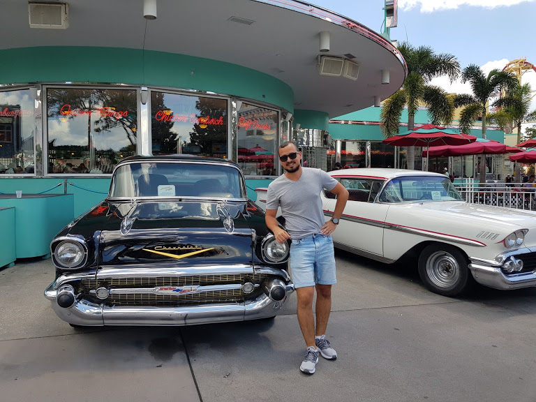

my photos


My name is Idan Weizman, I live in Be'er Sheva and a third year
student in information systems engineering at Ben Gurion University.
I love listening to music, playing and watching football, workout
and meet up with my friends.
As I said I love football and my favorite football teams are Hapoel
Beer Sheva and Real Madrid and last summer I traveled to England with
my friends and watched two games of the Premier League of Chelsea,
Manchester United and Liverpool.
I also traveled in the US and Canada with my family.
During my military service, I was a soldier in the combat force in
the Egyptian border, and a commander in basic training and advanced
training of soldiers in the corps.